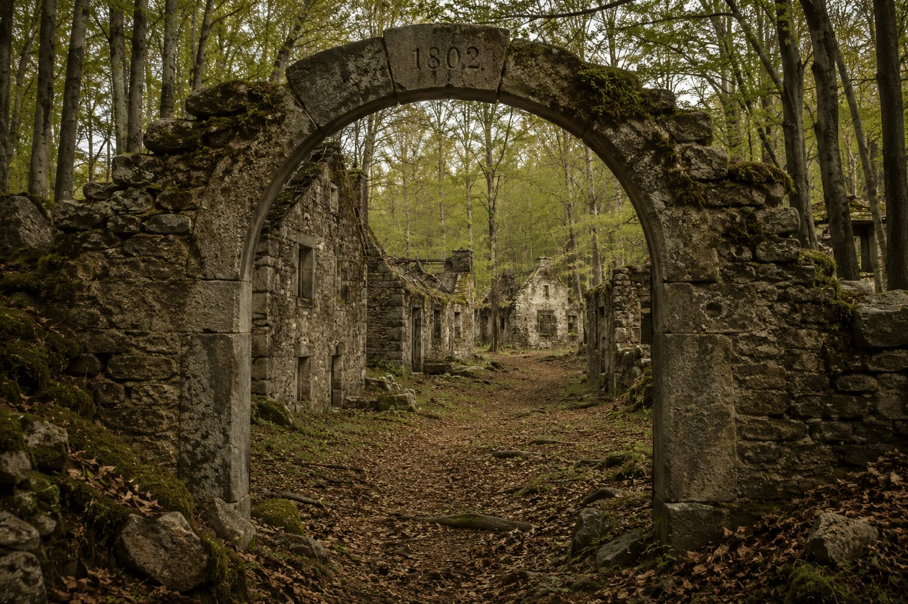
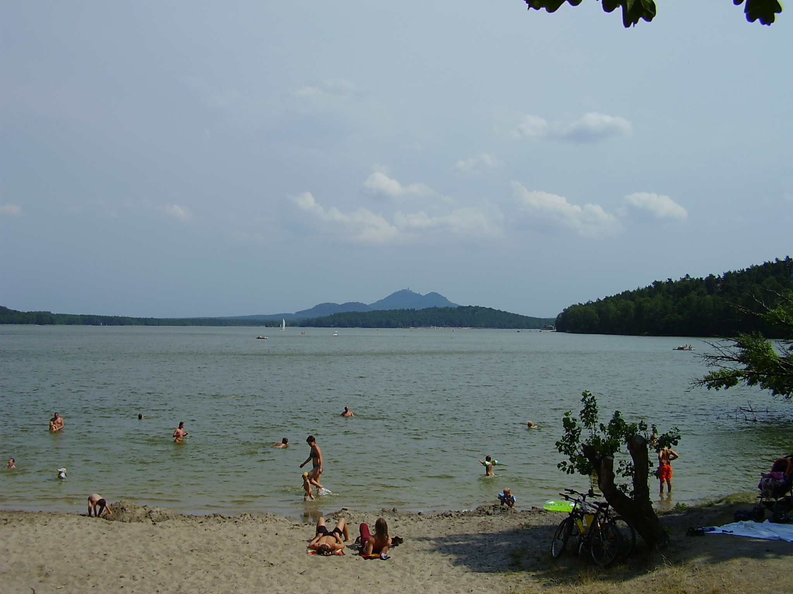
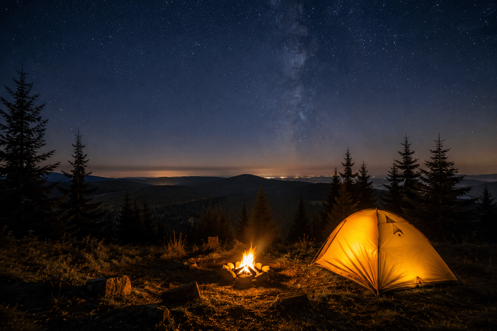
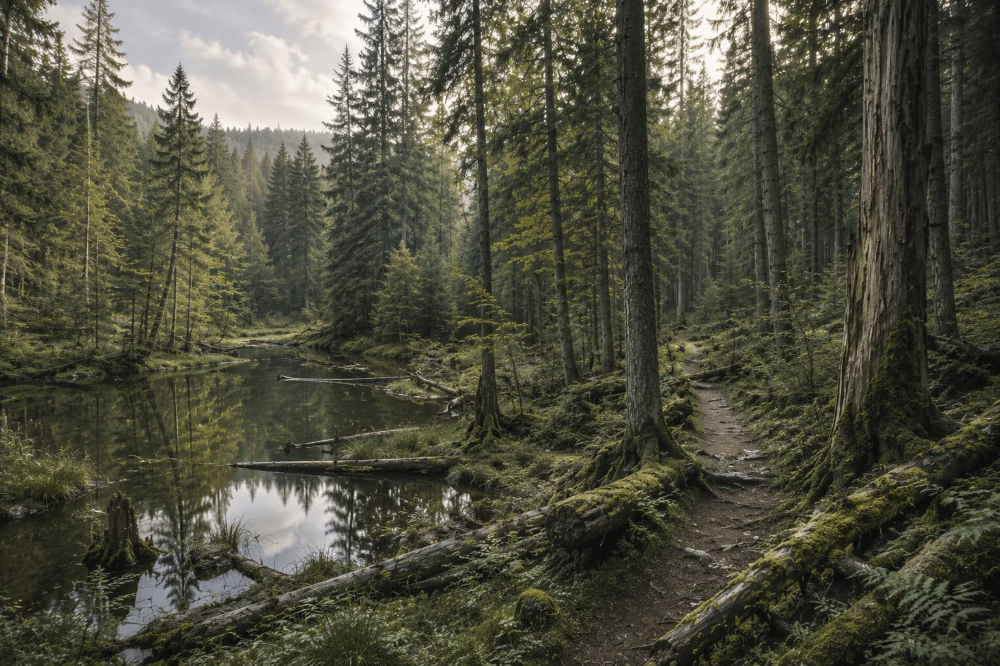

Difficulty - Easy
True gem for those who enjoy exploring the mysterious atmosphere of abandoned structures.
This is an often overlooked area along the German borders with deep beech forests, minimum tourism, a ruined castle and several abandoned settlements to explore.

Image generated using ChatGPT (OpenAI), 2026.
Difficulty – Easy to Medium
If you like beaches but you‘re tired of budget beach holiday resorts where the only thing you can do is slowly roast by the sea or fight over deck chairs around the pool, this is a place for you.
This giant artificial lake, made for the purpose of fish farming in 1366 has been slowly turned into a holiday resort during the 19th century and features several sandy beaches, water park and numerous cultural events throughout the summer months.
It is surrounded by dramatic sandrock landscape and deep pine forests with abundance of wild bilberry and cranberry bushes, perfect for foraging.

Wikimedia Commons – Photo by Michael Kummling (Wikipedia, CC by 2.5)
Difficulty - Medium
Dense forest, ice-cold mountain streams with romantic waterfalls, fantastic views.
Ideal place to be on a hot summer day.
These are no Himalayas but we are sure you will feel like you're touching the sky, especially at night time.
Due to the lack of big cities nearby the light pollution here is minimal.

Image generated using ChatGPT (OpenAI), 2026.
Difficulty - Medium
Beatiful meadows with rare endangered plant species, dramatic mountain lakes, deep woods, ancient marshlands and a chance to see wild wolves, lynx or even a brown bear.
This trip includes a visit to the stunning Boubin natural reserve, one of the last pieces of primeval woods in Europe, untouched since the dawn of men.

Image generated using ChatGPT (OpenAI), 2026.